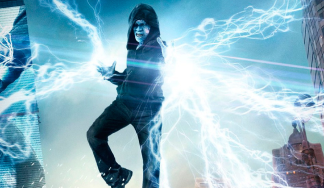

Ce n'est jamais blanc ou noir, méchant ou gentil !
Dennis Carredine
Identité: Inspiré du Cambrioleur Capacités:Humain sans caractéristique particulière. Objectif:Mi-temps entre escroc et voleur de voiture à New-York, il est en partie responsable,avec Flint Marco, de la mort de Ben Parker lors d'un braquage à main armé qui a mal tourné. C'est le premier adversaire de Ben Parker qui l'amène à devenir Spiderman.
Bouffon Vert
Identité: Norman Osborn Capacités: Fondateur de Oscorp Technologies, Serum Super Soldat, Planeur/Equipements de hautes technologies. Object:Souffrant d'une dissociation de personnalité après l'injection du serum, il ne cherche que le chaos et la mort de Spiderman. La personnalité de Norman reste présente, mais dominée par le bouffon.
Dr.Octopus
Identité:Otto Octavius Capacités:chercheur à Oscorp Technologies, Tentacules mécaniques contôlés par puce neuronale. Objectif:Suite à une accident lors d'une expérience, sa femme meurt et son équipement prend le contrôle de son esprit le rendant plus violent. Pensant que Spiderman en est l'origine, il souhaite le voir mort.
Homme-sable
Identité:Flint Marco Capacités: Change son corps en sable,Contôle individuellement les molécules de sable. Objectif: Sauver sa fille atteint de maladie grave est son unique préoccupation, même après son accident l'ayant changé en Homme-sable. Par manque d'argent, il et enchaine les mauvaise décisions.
Bouffon Vert II
Identité:Harry Osborn Capacités:Dirigeant de Oscorp Technologies, Serum Super Soldat II, Planeur/Equipements de hautes technologies. Objectif:Meilleur ami de Peter. Souffrant d'une dissociation de personnalité après l'injection du serum (comme son père), il ne cherche que la mort de Spiderman, tenu responsable de la mort de son père.
Venom
Identité:Symbiote / Eddie Brock Capacités:Force surhumaine, Matérialiser des armes /objets, Résistance importante. Objectif:Extraterrestre se liant à un journaliste d'investigation, il est l'anti Héro par excellence. A la fois térrifiant et violent, mais animé par le sentiment de justice d'Eddie, mieux vaut ne pas en faire son ennemi.
Lézard
Identité:Dr.Curtis Connors Capacités:Chercheurs Oscorp Technologies, Force surhummaine et Aptitudes reptiliennes. Objectif:Animé par le désir de sauvé les maux du corp humain, il développe une serum à partir d'ADN de lézard. Ce premier essai devait faire repousser son bras amputé, mais il se transforme entièrement en lézadr. Son souhait, étendre cette évolution.

Electro
Identité:Maxwell Dillon Capacités:Ingénieur Oscorp Technologie, Manipulatioin et stockage de l'électricité Objectif:Une expérience à Oscorp tourne mal et transforme son corp en condensateur capable de manipuler l'électricité. Fan obsessionnel de Spiderman, son pouvoir le change en adversaire rempli de colère et cherchant la défaite de son idole.
Rhino
Identité:Aleksei Sytsevich Capacités:Costume mécanique en forme de Rhinocéros puissant. Objectif:Mafieux russe qui a détourné un camion blindé d'Oscorp contenant des fioles de plutonium, mais désarmé et vaincu par Spiderman. Il est ensuite recruté par Harry Osborn, premier membre d'une nouvelle équipe créée pour combattre Spider-man et faire des ravages.
Vautour
Identité:Adrian Toomes Capacités:Costume mécanique de vautour, armes extraterrestre. Objectif:Il se convertit en marchand d'armes extraterrestre suite à la faillite de son entreprise. Père de famille fortuné le jour, voleur d'armes extraterrestre la nuit, il mène une double vie. Spiderman se mettant en travers de son business, il souhaite la mort du justicier.
Mysterio
Identité:Quentin Bleck Capacités:Intelligent, Costume hautes technologies, Drones. Objectif:Ancien employé de Stark Industries il cherche à remplacer Iron Man et devenir un symbole de justice. Pour celà, il orchestre des attaques en utilisant des illusions et une technologie avancé.Spiderman découvrant son plan, il devient un adversaire à la hauteur du Héro.